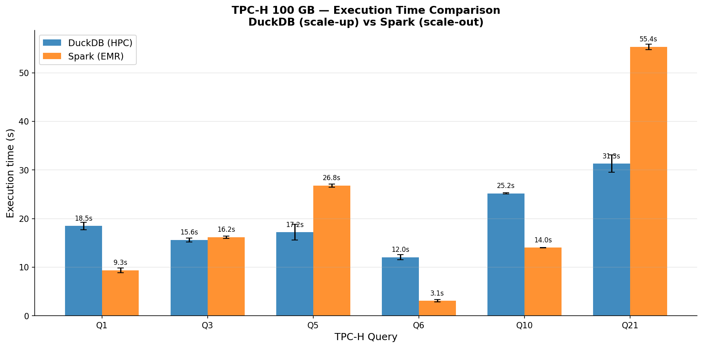
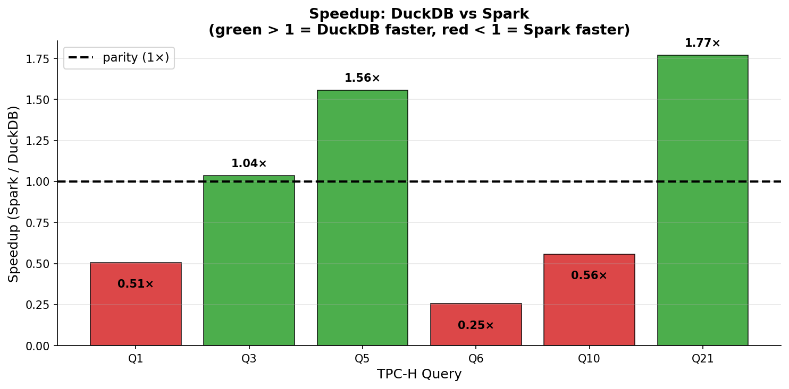

Franciszek Job & Przemysław Popowski
AGH University of Science and Technology · 2025/26
Can a single node with enough RAM match a distributed cluster for analytical SQL workloads?
Modern servers offer lots of RAM. If data fits in memory, is the complexity of a cluster even necessary?
| Platform | PLGrid, Cyfronet |
| vCPU | 8 |
| Total RAM | 187 GB |
| Engine RAM | 128 GB |
| Filesystem | Lustre NFS |
| Job scheduler | SLURM |
| Platform | AWS EMR 7.1.0 |
| Core nodes | 3× m5.4xlarge |
| Total vCPU | 48 |
| Engine RAM | 128 GB |
| Storage | Amazon S3 |
| Region | us-east-1 |
Both sides allocated the same 128 GB for the analytical engine.
Data format: parquet
| Table | Rows | Raw size |
|---|---|---|
lineitem |
~600 M | ~68 GB |
orders |
~150 M | ~15 GB |
partsupp |
~80 M | ~10 GB |
customer |
~15 M | ~2.3 GB |
part |
~20 M | ~2.3 GB |
supplier |
~1 M | ~136 MB |
nation / region |
<30 | <1 MB |
| Total | ~100 GB |
TPC-H - industry standard Decision Support benchmark (used e.g. by Alibaba, AMD, Dell)
Scale Factor 100 → ~100 GB raw data
Parquet: ~26 GB on Ares (ZSTD, ~4× smaller), ~33 GB on S3 (Spark default, ~3×)
Widely used to compare OLAP engines
| Query | Name | Pattern | What it tests |
|---|---|---|---|
| Q1 | Pricing Summary | Aggregation | Full scan of 68 GB lineitem |
| Q3 | Shipping Priority | 3-table JOIN + GROUP BY | Classic OLAP join |
| Q5 | Local Supplier Volume | 6-table JOIN | Complex multi-join |
| Q6 | Revenue Change | Filter + aggregation | IO-bound, range predicates |
| Q10 | Returned Items | 4-table JOIN + filter | Grouped reporting |
| Q21 | Suppliers Who Kept Orders | EXISTS / NOT EXISTS | Correlated subqueries |


3 wins each - DuckDB wins Q3, Q5, Q21 · Spark wins Q1, Q6, Q10
| Query | DuckDB | Spark | Reason |
|---|---|---|---|
| Q6 | 12.04 s | 3.07 s | Simple filter + agg - 48 vCPU and AQE dominate |
| Q1 | 18.49 s | 9.35 s | Full 68 GB scan - raw CPU parallelism wins |
| Q10 | 25.17 s | 14.01 s | 4-table JOIN distributed across cluster |
Pattern: Spark excels at large full-table scans and simple aggregations where 48 vCPU matter most.
| Query | DuckDB | Spark | Reason |
|---|---|---|---|
| Q21 | 31.30 s | 55.36 s | EXISTS/NOT EXISTS → local semi/anti-join, no shuffle |
| Q5 | 17.20 s | 26.79 s | 6-table JOIN - dimensions cached in local RAM |
| Q3 | 15.59 s | 16.16 s | Effectively a tie (<4% difference) |
Pattern: DuckDB excels at complex joins and correlated subqueries - zero network overhead.
Franciszek Job & Przemysław Popowski
AGH University of Science and Technology · 2025/26